Google Drive
Redesigned
For Enhanced Productivity
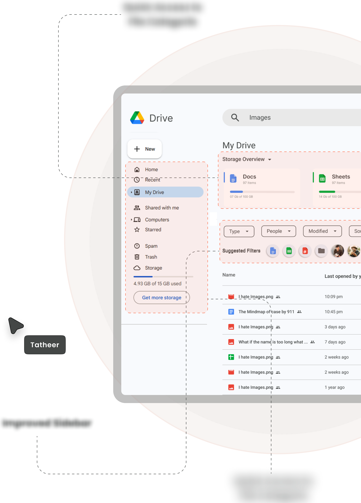
Introduction
Google Drive users struggle with file organization and navigation due to a cluttered interface, lack of advanced search and filtering options, and difficulty distinguishing between shared and personal files. This results in frustration, inefficiency, and wasted time, especially for users who manage a large volume of files for work, study, or freelancing.
At A Glance
The Problem
Google Drive users face challenges with cluttered interfaces, inefficient search, and difficulty managing shared files, leading to frustration and wasted time.
Goal
Improve file organization and navigation by introducing advanced filtering, automated categorization, and clearer visual distinctions between shared and personal files.
Solution
A redesigned interface with intelligent features like smart search, visual indicators, and automated file sorting to streamline workflows and enhance user productivity.
Dashboard
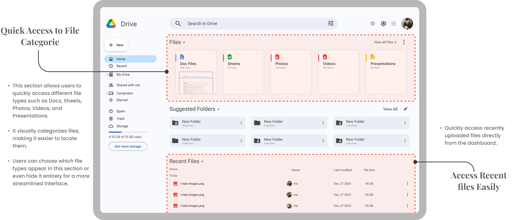
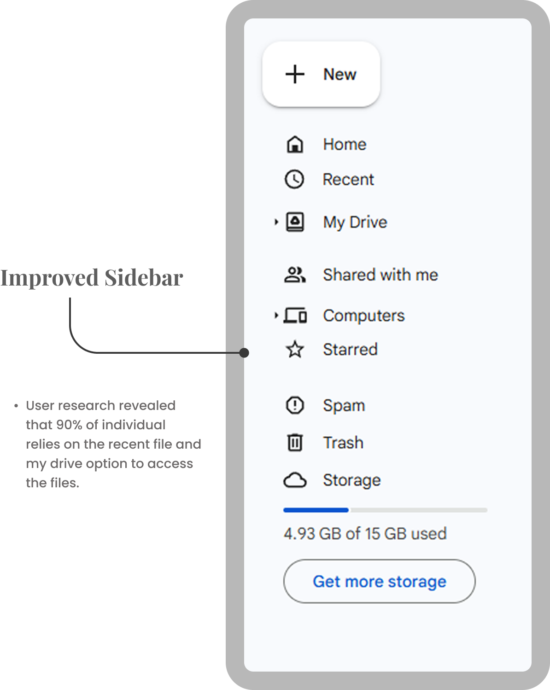
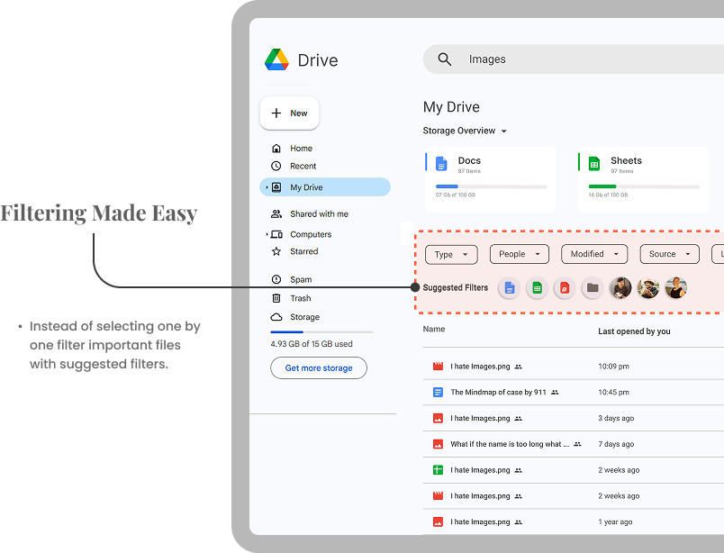
Impact
A more intuitive and efficient Google Drive experience that reduces clutter, saves time, and improves overall user satisfaction.
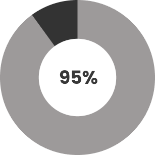
95% of the users liked the redesign 16 out of 17.
Background and Motivation
Google's products are known for their great UI and UX, but while using Google Drive, I noticed issues like a cluttered interface and inefficient search. Research confirmed these were common pain points, with users struggling to organize files and expressing a need for automatic categorization. This inspired me to design solutions for a more intuitive and efficient file management experience.
Problem Statement
Google Drive users struggle with file organization and navigation due to a cluttered interface, lack of advanced search and filtering options, and difficulty distinguishing between shared and personal files. This results in frustration, inefficiency, and wasted time, especially for users who manage a large volume of files for work, study, or freelancing.
Understanding The Problem
The data collected through surveys and interviews revealed that Google Drive users face several challenges when managing their files. While the responses were not always highly specific, key themes emerged regarding user frustrations and behaviors.
- The cluttered interface makes it hard to quickly locate files.
- Users want better search and filtering but struggle with broad search results.
- No automatic categorization forces users to spend extra time manually sorting files.
Solution
To improve the file organization and navigation experience in Google Drive, a combination of UI/UX enhancements and intelligent features can be introduced. The solution focuses on reducing clutter, enhancing searchability, and improving file differentiation to boost efficiency and reduce frustration.
How can I, as a UX Designer, improve their experience?
Competition Analysis
A comparison of Google Drive with Dropbox, OneDrive, iCloud Drive, and Mega highlighted its strengths in accessibility and collaboration. However, it falls short in areas like advanced filtering, smart categorization, and granular sharing controls, leading to clutter and inefficiency. Addressing these gaps—through enhanced search, better organization, and improved sharing security—can make Google Drive more seamless and productive for users.
Empathy Map
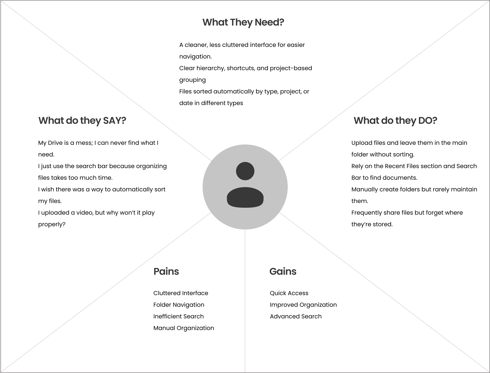
Quantitative Research
I have conducted an online survey and user interview from 10 different people.
Observations
80%
Of the users finds the interface cluttered.
87%
The search bar is a primary tool for file navigation, but its reliance indicates that users struggle with manual folder navigation.
10%
A small segment of users is indifferent to organization, likely because they use Google Drive for minimal or infrequent file storage.
95%
Users heavily rely on the "Recent Files" section as a quick way to access their latest work, indicating that they prioritize convenience and speed over manual organization.
94%
Users desire automated or semi-automated categorization to reduce the manual effort of organizing files. This indicates a strong demand for features like smart folders according to file type.
User Needs
-
Users need a less confusing interface to reduce visual overwhelm and improve focus on important files.
-
Users need automatic sorting of files by type, project, or date to reduce the time spent on manual organization.
-
Users need a clearer folder hierarchy and quick shortcuts to navigate between multiple projects or folders.
Features & Functionalities
To resolve user needs
Personas
User Persona-1
Alex Carter
Community Manager
About
Maslow Pyramid

Description
Alex Carter is a passionate and creative freelance motion graphics artist with over six years of experience in the industry. Specializing in creating visually stunning animations, explainer videos, and dynamic motion graphics, Alex has worked with a diverse range of clients, from startups to established brands. His work is known for its clean, modern aesthetic and ability to tell compelling stories through motion.
Pain points
- Alex finds the drive dashboard overwhelming, making it difficult to locate specific files.
- Always struggles with files (documents, videos, images) getting mixed up in the main area, leading to disorganization.
- Alex don't like to apply same filters everytime he open drive.
- Alex needs an automated categorization to keep different file types separate without manual effort.
I always get confused by the suggested files on the dashboard—they mix up with my recent files and make it harder to find what I actually need. The Recent Files tab is a lifesaver, but I wish it could automatically sort files into folders, like documents or photos, to save me the hassle of doing it manually.
User Persona-2
Description
Mia Patel is a driven and creative college student pursuing a degree in Graphic Design at a prestigious art school in Chicago. With a passion for visual storytelling and a keen eye for detail, Mia is constantly honing her skills in design, illustration, and motion graphics. She dreams of working in the creative industry, either at a design agency or as a freelance designer, after graduation.
Pain points
- Files from multiple courses, assignments, and group projects get mixed up, making it hard to find the right document.
- Find it hard to access recent files from dashboard.
- Unable to make the links shorter.
- Needs an easier way to manage edit/view permissions when sharing assignments with classmates.
I constantly lose track of my files because assignments from different courses get mixed up, and finding the right one takes way longer than it should. The dashboard doesn't always show the files I need, and I wish there was a way to access my most recent work without digging through folders.
Mia Patel
Student
About
Maslow Pyramid
Screens Selected for Redesign
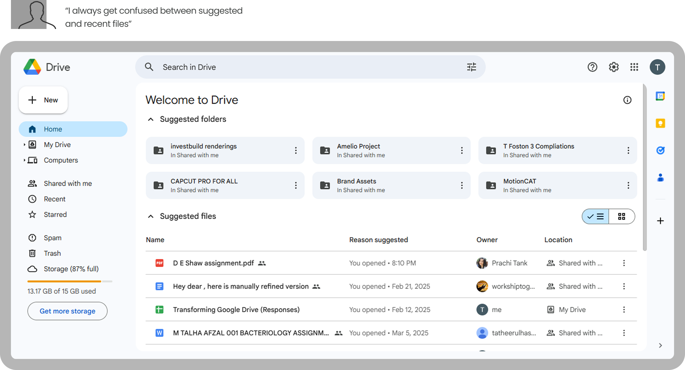
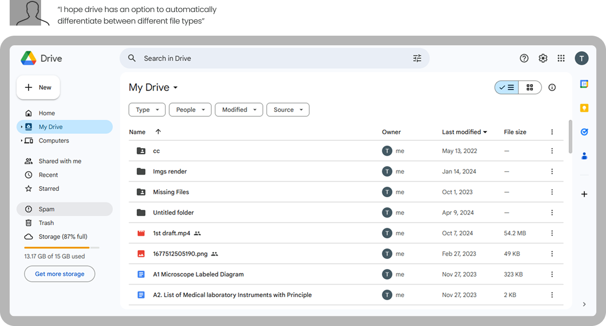
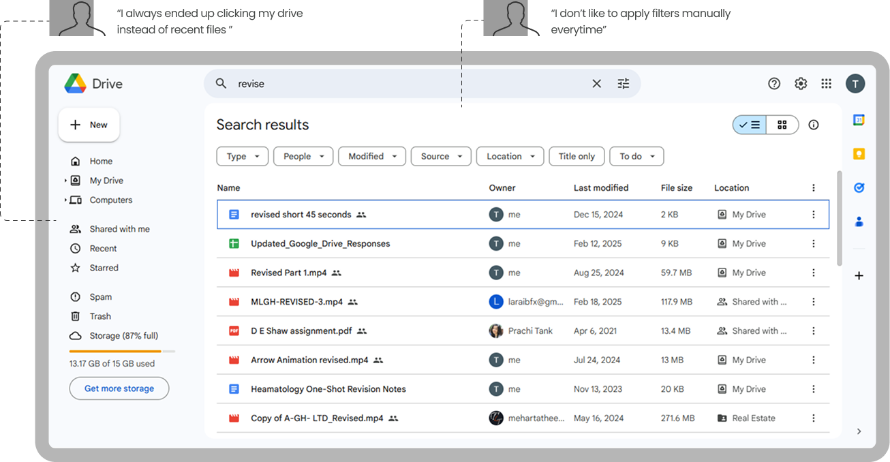
Low Fidelity
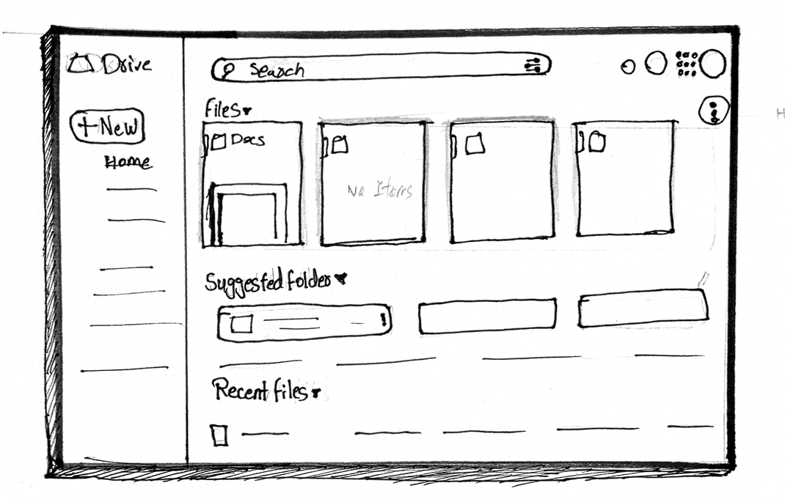
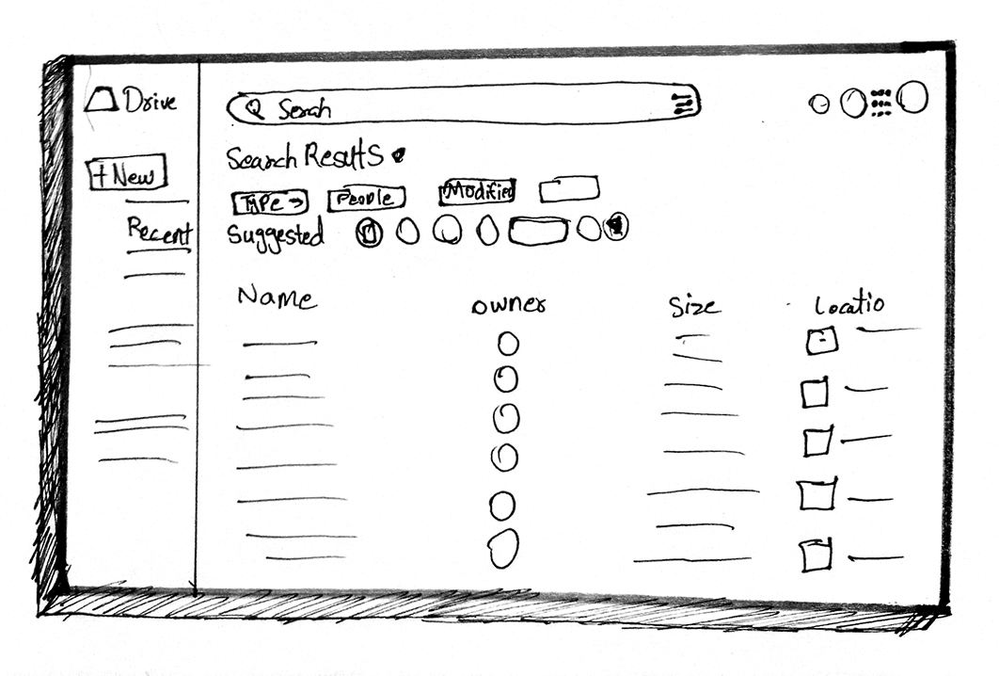
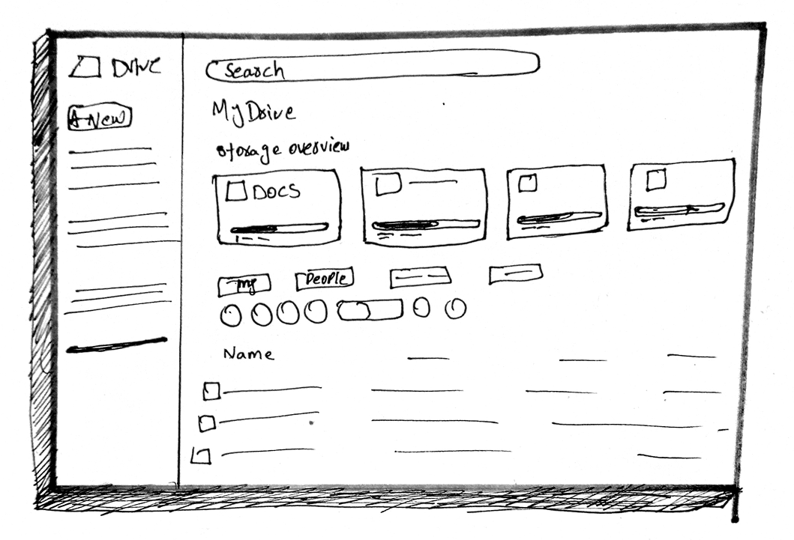
Wireframes
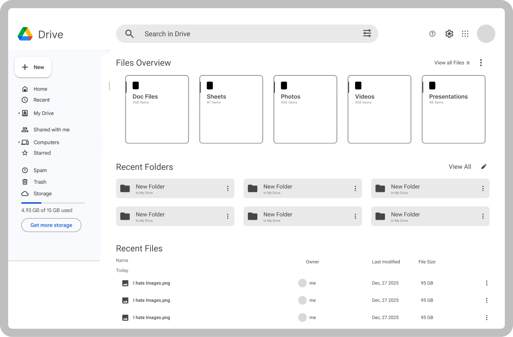
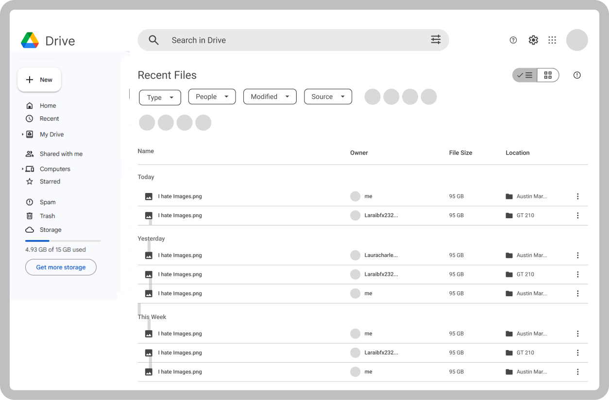
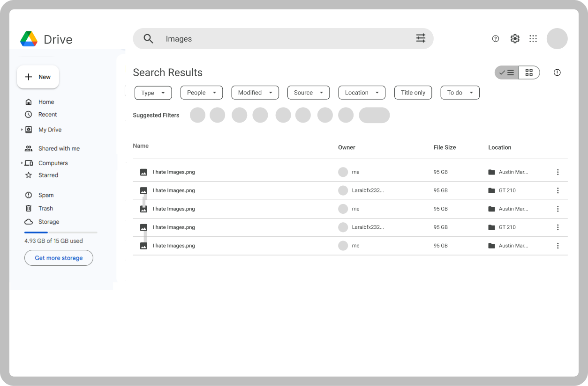
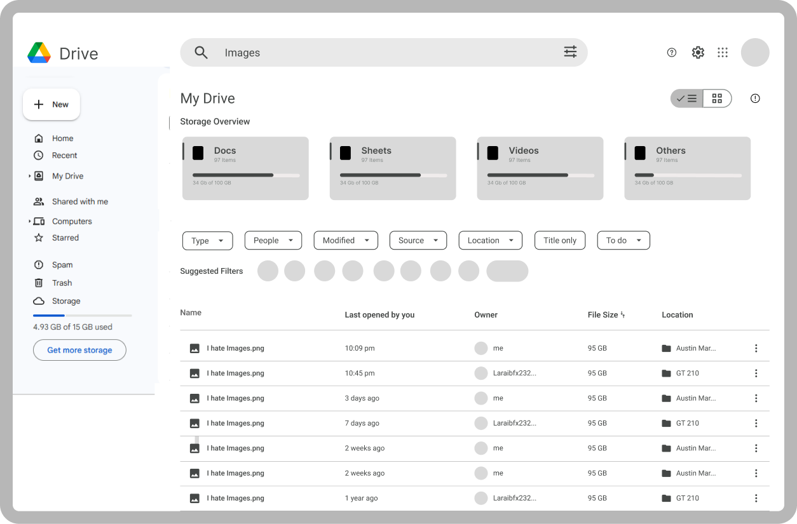
Screens in Action

“Small tweaks, big impact—Google Drive just became a smoother, smarter experience!”
Visual Design
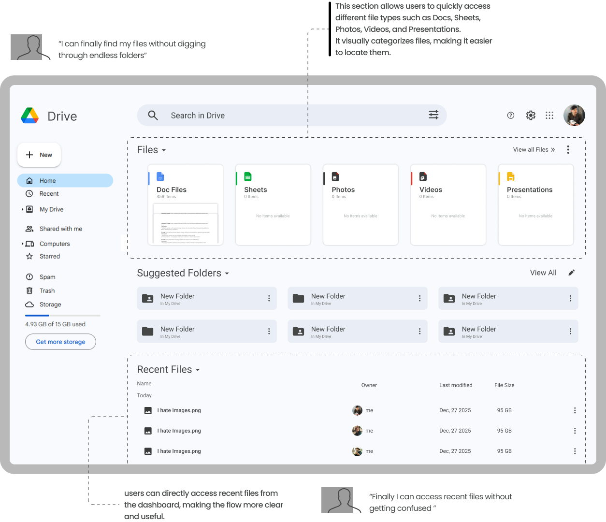
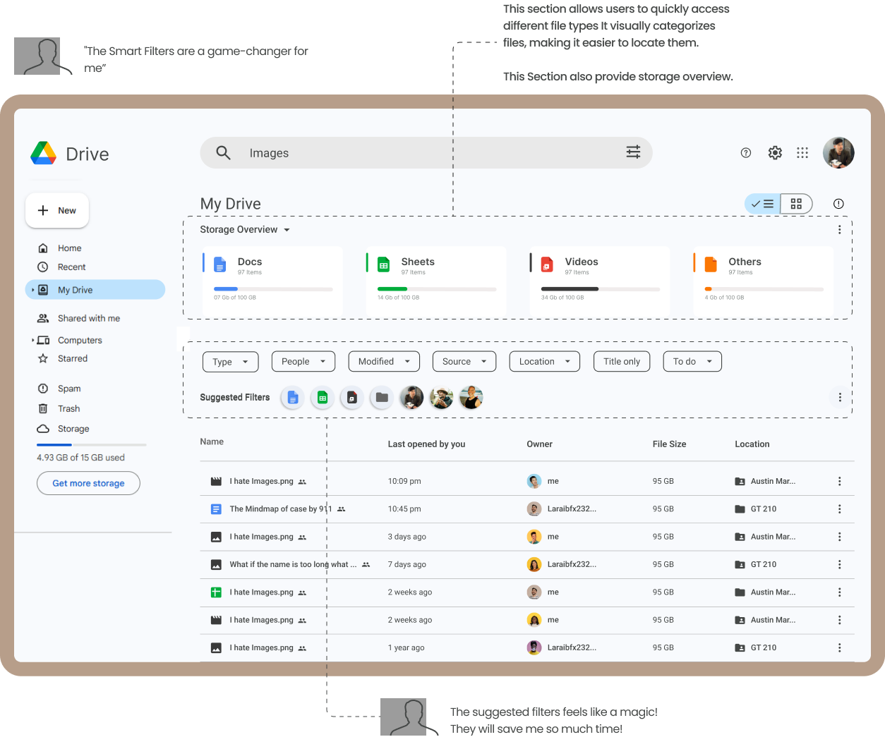
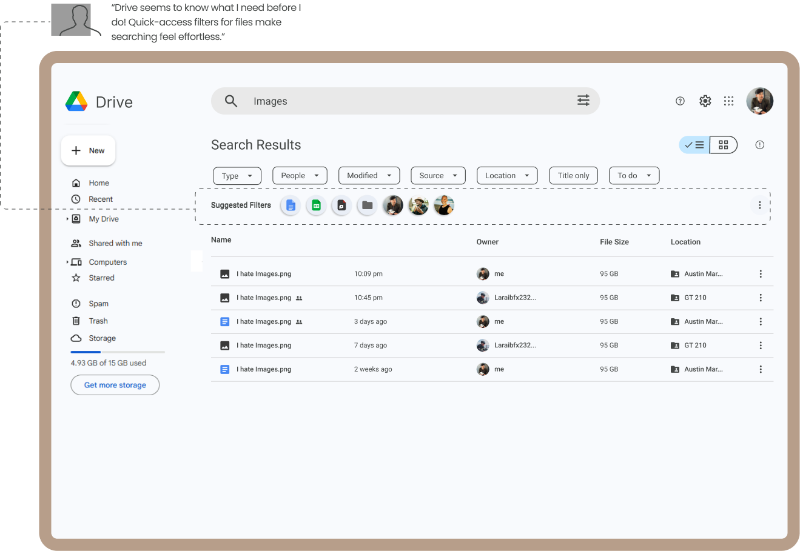
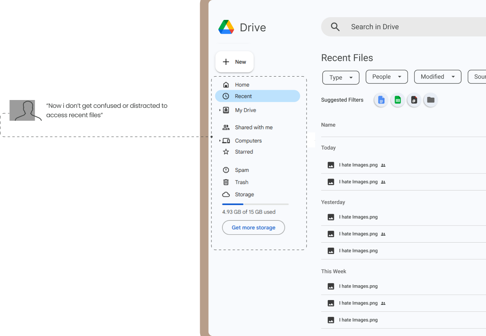
Takeaways
Redesigning Google Drive was a challenging but rewarding process. By focusing on user needs and identifying key pain points like cluttered navigation and manual organization, I was able to create a more intuitive and efficient interface. This project reinforced the importance of balancing aesthetic improvements with functional utility, ensuring that new features like automated sorting genuinely enhance the user's workflow without adding unnecessary cognitive load.